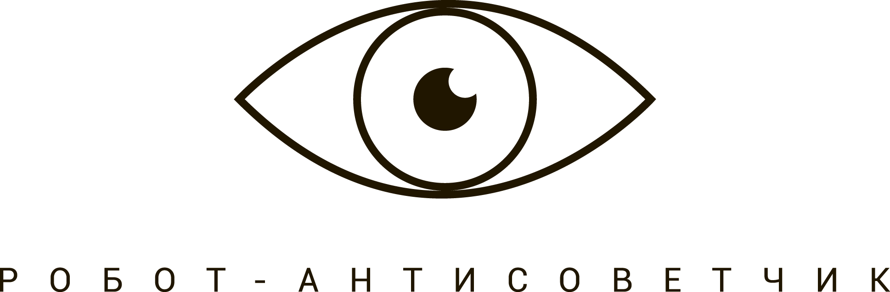

<section class="main main__who" id="who" ng-controller="mainCtrl">
        <div class="center">
                <a href="" ui-sref="what">
                    
                </a>
                <p id="who-1" class="title">Кто он этот робот?</p>
                <p id="who-2" class="description">Главное - чтоб открывались перспективы! И, некоторое время, не закрывались...</p>
                <div id="who-3" class="btn">
                    <a  class="transferLink" href="/" ui-sref="what">
                        Вернуться
                    </a>
                </div>
        </div>
</section>